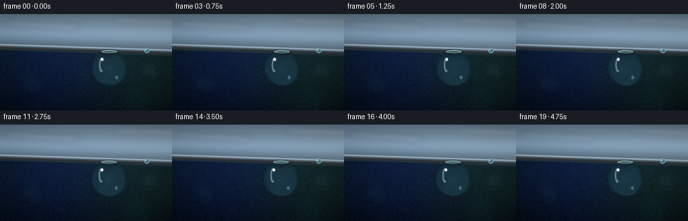
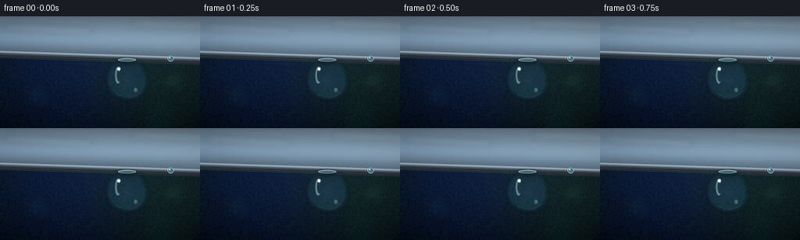

CODING AGENTS AS PIXEL WORLD MODELS
traex/GPT-5.6-Sol · mechanics_0054
点击播放 · 原生 RGB 像素
逐轮保存的候选
回放视频、检查图与代码变化。
每份候选均可单独播放。实际图片检查记录在下方工具轨迹中。
候选 01播放与检查图
点击播放 · 原生 RGB 像素


展开代码变化
--- 上一保存版本
+++ 本次保存版本
@@ -0,0 +1,192 @@
+from pathlib import Path
+import math
+import numpy as np
+from PIL import Image, ImageDraw, ImageFilter
+import artifact_io
+
+# Procedural macro photography: a water bead held to the polished lower edge of a mirror.
+W, H, N = 256, 144, 20
+S = 4
+w, h = W*S, H*S
+rng = np.random.default_rng(540054)
+
+
+def mask_polygon(points):
+ m = Image.new('L', (w, h), 0)
+ ImageDraw.Draw(m).polygon([(int(x*S), int(y*S)) for x,y in points], fill=255)
+ return m
+
+
+def cubic(p0,p1,p2,p3,n=20):
+ out=[]
+ for t in np.linspace(0,1,n,endpoint=False):
+ u=1-t
+ out.append((u**3*p0[0]+3*u*u*t*p1[0]+3*u*t*t*p2[0]+t**3*p3[0],
+ u**3*p0[1]+3*u*u*t*p1[1]+3*u*t*t*p2[1]+t**3*p3[1]))
+ return out
+
+# Static dark, cinematic room behind the mirror.
+yy, xx = np.mgrid[0:h, 0:w]
+X, Y = xx/S, yy/S
+vign = ((X-132)/168)**2 + ((Y-82)/112)**2
+bg = np.zeros((h,w,3), dtype=np.float32)
+bg[:,:,0] = 9 + 10*(1-Y/H) + 5*np.exp(-((X-214)**2+(Y-77)**2)/8000)
+bg[:,:,1] = 18 + 20*(1-Y/H) + 11*np.exp(-((X-205)**2+(Y-72)**2)/7000)
+bg[:,:,2] = 25 + 28*(1-Y/H) + 18*np.exp(-((X-82)**2+(Y-72)**2)/8500)
+bg -= vign[:,:,None]*np.array([5,7,8])
+bg = np.clip(bg,0,255).astype(np.uint8)
+base_bg = Image.fromarray(bg, 'RGB')
+
+# Defocused lights in the room, deliberately subtle and soft.
+bokeh = Image.new('RGBA',(w,h),(0,0,0,0)); bd=ImageDraw.Draw(bokeh,'RGBA')
+def bcirc(cx,cy,r,col):
+ bd.ellipse(((cx-r)*S,(cy-r)*S,(cx+r)*S,(cy+r)*S),fill=col)
+bcirc(222,83,12,(80,147,143,35)); bcirc(230,84,5,(194,220,194,28))
+bcirc(48,102,17,(41,93,122,25)); bcirc(78,70,7,(86,132,148,18))
+bcirc(205,128,24,(13,73,83,20)); bcirc(22,73,9,(58,101,132,20))
+bokeh=bokeh.filter(ImageFilter.GaussianBlur(7*S))
+base_bg=Image.alpha_composite(base_bg.convert('RGBA'),bokeh).convert('RGB')
+
+# Fine stationary sensor/room texture (kept weak so it feels photographic, not noisy).
+noise_small=rng.normal(0,1,(H,W)).astype(np.float32)
+noise=np.array(Image.fromarray(np.uint8(np.clip(noise_small*18+128,0,255))).resize((w,h),Image.Resampling.BICUBIC),dtype=np.float32)-128
+base_np=np.asarray(base_bg).astype(np.float32)
+base_np=np.clip(base_np+noise[:,:,None]*0.16,0,255).astype(np.uint8)
+base_bg=Image.fromarray(base_np)
+
+# Fixed masks for the mirror surface and its narrow glass bevel.
+edge_left, edge_right = 44.5, 53.0
+surface_pts=[(0,0),(W,0),(W,edge_right),(0,edge_left)]
+bevel_pts=[(0,edge_left),(W,edge_right),(W,61.0),(0,52.5)]
+surface_mask=mask_polygon(surface_pts)
+bevel_mask=mask_polygon(bevel_pts)
+
+frames=[]
+for fi in range(N):
+ phase=2*math.pi*fi/N
+ frame=base_bg.copy().convert('RGBA')
+
+ # Mirror surface: cool, extremely smooth gradients with blurred reflected window/light bands.
+ my, mx=np.mgrid[0:h,0:w]; qx=mx/S; qy=my/S
+ gleam_center=27 + 2.0*math.sin(phase*0.45)
+ band=np.exp(-((qy-(gleam_center+0.020*qx))**2)/(2*12.5**2))
+ far=np.exp(-((qy-(4+0.025*qx))**2)/(2*9**2))
+ mirror=np.empty((h,w,4),dtype=np.uint8)
+ mirror[:,:,0]=np.clip(59+56*band+22*far+0.055*qx,0,255)
+ mirror[:,:,1]=np.clip(76+66*band+24*far+0.050*qx,0,255)
+ mirror[:,:,2]=np.clip(91+74*band+25*far+0.042*qx,0,255)
+ mirror[:,:,3]=255
+ mirror_im=Image.fromarray(mirror,'RGBA')
+ # Long reflected ceiling lights, soft and unmistakably mirrored.
+ refl=Image.new('RGBA',(w,h),(0,0,0,0)); rd=ImageDraw.Draw(refl,'RGBA')
+ shift=2.0*math.sin(phase*0.35)
+ rd.polygon([(12*S,(10+shift)*S),(121*S,(16+shift)*S),(111*S,(23+shift)*S),(5*S,(17+shift)*S)],fill=(235,245,246,38))
+ rd.polygon([(174*S,5*S),(256*S,8*S),(256*S,16*S),(168*S,13*S)],fill=(213,233,238,30))
+ refl=refl.filter(ImageFilter.GaussianBlur(3.8*S))
+ mirror_im=Image.alpha_composite(mirror_im,refl)
+ frame.paste(mirror_im,(0,0),surface_mask)
+
+ # Glass-backed silver bevel beneath the face.
+ bev=np.zeros((h,w,4),dtype=np.uint8)
+ line_y=edge_left+(edge_right-edge_left)*(qx/W)
+ rel=qy-line_y
+ # Alternating bright lip / dark underside conveys thickness and a polished edge.
+ lum=96 + 85*np.exp(-((rel-1.2)/1.1)**2) - 47*np.exp(-((rel-6.0)/2.0)**2)
+ bev[:,:,0]=np.clip(lum*0.77,0,255); bev[:,:,1]=np.clip(lum*0.90,0,255); bev[:,:,2]=np.clip(lum,0,255); bev[:,:,3]=255
+ frame.paste(Image.fromarray(bev,'RGBA'),(0,0),bevel_mask)
+ # Razor-like silver boundaries.
+ fd=ImageDraw.Draw(frame,'RGBA')
+ fd.line([(0,int(edge_left*S)),(w,int(edge_right*S))],fill=(235,247,249,175),width=max(1,S//2))
+ fd.line([(0,int(52.5*S)),(w,int(61*S))],fill=(3,11,17,205),width=S)
+ fd.line([(0,int(53.1*S)),(w,int(61.6*S))],fill=(101,132,145,90),width=max(1,S//2))
+
+ # Primary droplet: tiny elastic oscillation settles during the shot.
+ settle=math.exp(-fi/15)
+ sway=1.15*math.sin(phase*1.05)*settle
+ squash=0.75*math.cos(phase*1.05)*settle
+ cx=163.0+sway
+ attach_y=edge_left+(edge_right-edge_left)*(cx/W)+7.0
+ bottom=105.0-squash
+ leftmost=138.0-0.35*squash+sway
+ rightmost=187.0+0.35*squash+sway
+ # Bézier contour gives a real capillary neck merging into a nearly spherical bead.
+ pts=[]
+ pts += cubic((155.3+sway,attach_y-2.2),(155.0+sway,59.3),(148.2+sway,61.7),(142.0+sway,70.5),18)
+ pts += cubic((142.0+sway,70.5),(133.8+sway,84.3),(142.6+sway,101.6),(160.5+sway,bottom),28)
+ pts += cubic((160.5+sway,bottom),(178.4+sway,106.8),(188.9+sway,92.4),(184.6+sway,76.0),28)
+ pts += cubic((184.6+sway,76.0),(182.2+sway,65.9),(173.9+sway,60.0),(170.3+sway,58.4),18)
+ pts += cubic((170.3+sway,58.4),(169.8+sway,56.3),(169.7+sway,54.4),(168.6+sway,attach_y-2.1),10)
+ pts += [(155.3+sway,attach_y-2.2)]
+ dm=Image.new('L',(w,h),0); dd=ImageDraw.Draw(dm)
+ dd.polygon([(int(x*S),int(y*S)) for x,y in pts],fill=255)
+ dm=dm.filter(ImageFilter.GaussianBlur(0.18*S))
+ mask=np.asarray(dm,dtype=np.float32)/255.0
+
+ # Optical lensing: compress and slightly invert/shift the room behind the drop.
+ arr=np.asarray(frame.convert('RGB'))
+ # Coordinates sampled around the lens centre. Mild flip in vertical axis creates realistic refracted bokeh.
+ dx=(qx-cx); dy=(qy-82.2)
+ sx=np.clip((cx + dx*0.74 - 4.3 + 1.5*np.sin(dy/12))*S,0,w-1).astype(np.int32)
+ sy=np.clip((82.2 - dy*0.54 + 6.0)*S,0,h-1).astype(np.int32)
+ refr=arr[sy,sx].astype(np.float32)
+ # Watery cyan tint and internal illumination.
+ radial=np.sqrt((dx/25.5)**2+(dy/25.0)**2)
+ refr=refr*0.78 + np.array([15,28,35]) + np.clip(1-radial,0,1)[:,:,None]*np.array([10,15,16])
+ comp=arr.astype(np.float32)*(1-mask[:,:,None]*0.91)+refr*mask[:,:,None]*0.91
+ frame=Image.fromarray(np.uint8(np.clip(comp,0,255)),'RGB').convert('RGBA')
+
+ # Dark liquid rim and luminous lower caustic, built from dilated/eroded masks.
+ outer=dm.filter(ImageFilter.MaxFilter(4*S+1))
+ inner=dm.filter(ImageFilter.MinFilter(3*S+1))
+ ma=np.asarray(dm,dtype=np.int16); oa=np.asarray(outer,dtype=np.int16); ia=np.asarray(inner,dtype=np.int16)
+ rim=np.uint8(np.clip((oa-ia)*0.52,0,145))
+ rim_layer=Image.new('RGBA',(w,h),(20,54,67,0)); rim_layer.putalpha(Image.fromarray(rim))
+ frame=Image.alpha_composite(frame,rim_layer)
+
+ # Directional inner shade on right/bottom preserves transparent spherical volume.
+ shade=Image.new('RGBA',(w,h),(0,0,0,0)); sd=ImageDraw.Draw(shade,'RGBA')
+ sd.ellipse(((cx-24)*S,59*S,(cx+25)*S,106*S),fill=(2,18,24,58))
+ shade.putalpha(Image.fromarray(np.uint8(np.asarray(shade.getchannel('A'))*mask)))
+ shade=shade.filter(ImageFilter.GaussianBlur(6*S))
+ frame=Image.alpha_composite(frame,shade)
+
+ # Surface specular highlights: broad crescent, sharp streak and tiny catchlight.
+ hi=Image.new('RGBA',(w,h),(0,0,0,0)); hd=ImageDraw.Draw(hi,'RGBA')
+ hx=cx-9.8+0.45*math.sin(phase)
+ hd.ellipse(((hx-6.2)*S,65*S,(hx+1.5)*S,87*S),fill=(226,248,250,105))
+ hd.ellipse(((hx-3.7)*S,67*S,(hx+1.7)*S,84*S),fill=(20,60,70,70))
+ hd.ellipse(((cx-12.8)*S,65.0*S,(cx-8.7)*S,70.2*S),fill=(255,255,255,235))
+ hd.ellipse(((cx+8.0)*S,91.7*S,(cx+13.0)*S,97.8*S),fill=(152,231,239,75))
+ # bright lower caustic arc
+ hd.arc(((cx-18.5)*S,69*S,(cx+19.5)*S,105*S),30,139,fill=(180,239,242,115),width=max(2,int(0.9*S)))
+ hi=hi.filter(ImageFilter.GaussianBlur(0.55*S))
+ hi.putalpha(Image.fromarray(np.uint8(np.asarray(hi.getchannel('A'))*mask)))
+ frame=Image.alpha_composite(frame,hi)
+
+ # Wet meniscus at the attachment and a tiny companion bead on the same edge.
+ fg=ImageDraw.Draw(frame,'RGBA')
+ fg.ellipse(((151+sway)*S,(attach_y-3.1)*S,(174+sway)*S,(attach_y+1.5)*S),fill=(146,209,218,72),outline=(235,249,250,145),width=max(1,S//2))
+ # Companion bead adds scale while keeping the hero bead dominant.
+ bx=218.5+0.15*math.sin(phase*0.7); by=edge_left+(edge_right-edge_left)*(bx/W)+2.8
+ fg.ellipse(((bx-3.9)*S,(by-3.4)*S,(bx+3.9)*S,(by+3.5)*S),fill=(63,111,126,155),outline=(190,230,235,155),width=max(1,S//2))
+ fg.ellipse(((bx-2.1)*S,(by-2.0)*S,(bx-0.5)*S,(by-0.4)*S),fill=(255,255,255,210))
+
+ # Soft contact shadow immediately behind the neck makes it visibly cling to the metal/glass edge.
+ shadow=Image.new('RGBA',(w,h),(0,0,0,0)); shd=ImageDraw.Draw(shadow,'RGBA')
+ shd.ellipse(((149+sway)*S,(attach_y-2)*S,(176+sway)*S,(attach_y+5)*S),fill=(0,4,8,85))
+ shadow=shadow.filter(ImageFilter.GaussianBlur(2.1*S))
+ # only a very faint overlay to avoid obscuring the bright meniscus already drawn
+ frame=Image.alpha_composite(frame,shadow)
+
+ # Downsample to final RGB; Lanczos supplies smooth cinematic antialiasing.
+ out=frame.convert('RGB').resize((W,H),Image.Resampling.LANCZOS)
+ # Gentle final contrast / vignette at output resolution.
+ a=np.asarray(out).astype(np.float32)
+ oy,ox=np.mgrid[0:H,0:W]
+ vv=1-0.11*np.clip(((ox-128)/165)**2+((oy-75)/105)**2,0,1)
+ a=(a-10)*1.075+10
+ a*=vv[:,:,None]
+ frames.append(np.uint8(np.clip(a,0,255)))
+
+frames=np.stack(frames,axis=0)
+artifact_io.save(frames, Path(__file__).resolve().parent)
可观测工具轨迹
实际执行的命令与返回图片。
命令 1exit 0
/bin/bash -lc "cat prompt.txt && printf '\\n---RULES---\\n' && cat GENERATION_RULES.md && printf '\\n---SPEC---\\n' && cat task_spec.json"
命令 2exit 0
/bin/bash -lc "find . -maxdepth 2 -type f -printf '%p\\n' | sort"
命令 3exit 0
/bin/bash -lc 'cat artifact_io.py'
命令 4exit 0
/bin/bash -lc "cat > generate.py <<'PY'
from pathlib import Path
import math
import numpy as np
from PIL import Image, ImageDraw, ImageFilter
import artifact_io
# Procedural macro photography: a water bead held to the polished lower edge of a mirror.
W, H, N = 256, 144, 20
S = 4
w, h = W*S, H*S
rng = np.random.default_rng(540054)
def mask_polygon(points):
m = Image.new('L', (w, h), 0)
ImageDraw.Draw(m).polygon([(int(x*S), int(y*S)) for x,y in points], fill=255)
return m
def cubic(p0,p1,p2,p3,n=20):
out=[]
for t in np.linspace(0,1,n,endpoint=False):
u=1-t
out.append((u**3*p0[0]+3*u*u*t*p1[0]+3*u*t*t*p2[0]+t**3*p3[0],
u**3*p0[1]+3*u*u*t*p1[1]+3*u*t*t*p2[1]+t**3*p3[1]))
return out
# Static dark, cinematic room behind the mirror.
yy, xx = np.mgrid[0:h, 0:w]
X, Y = xx/S, yy/S
vign = ((X-132)/168)**2 + ((Y-82)/112)**2
bg = np.zeros((h,w,3), dtype=np.float32)
bg[:,:,0] = 9 + 10*(1-Y/H) + 5*np.exp(-((X-214)**2+(Y-77)**2)/8000)
bg[:,:,1] = 18 + 20*(1-Y/H) + 11*np.exp(-((X-205)**2+(Y-72)**2)/7000)
bg[:,:,2] = 25 + 28*(1-Y/H) + 18*np.exp(-((X-82)**2+(Y-72)**2)/8500)
bg -= vign[:,:,None]*np.array([5,7,8])
bg = np.clip(bg,0,255).astype(np.uint8)
base_bg = Image.fromarray(bg, 'RGB')
# Defocused lights in the room, deliberately subtle and soft.
bokeh = Image.new('RGBA',(w,h),(0,0,0,0)); bd=ImageDraw.Draw(bokeh,'RGBA')
def bcirc(cx,cy,r,col):
bd.ellipse(((cx-r)*S,(cy-r)*S,(cx+r)*S,(cy+r)*S),fill=col)
bcirc(222,83,12,(80,147,143,35)); bcirc(230,84,5,(194,220,194,28))
bcirc(48,102,17,(41,93,122,25)); bcirc(78,70,7,(86,132,148,18))
bcirc(205,128,24,(13,73,83,20)); bcirc(22,73,9,(58,101,132,20))
bokeh=bokeh.filter(ImageFilter.GaussianBlur(7*S))
base_bg=Image.alpha_composite(base_bg.convert('RGBA'),bokeh).convert('RGB')
# Fine stationary sensor/room texture (kept weak so it feels photographic, not noisy).
noise_small=rng.normal(0,1,(H,W)).astype(np.float32)
noise=np.array(Image.fromarray(np.uint8(np.clip(noise_small*18+128,0,255))).resize((w,h),Image.Resampling.BICUBIC),dtype=np.float32)-128
base_np=np.asarray(base_bg).astype(np.float32)
base_np=np.clip(base_np+noise[:,:,None]*0.16,0,255).astype(np.uint8)
base_bg=Image.fromarray(base_np)
# Fixed masks for the mirror surface and its narrow glass bevel.
edge_left, edge_right = 44.5, 53.0
surface_pts=[(0,0),(W,0),(W,edge_right),(0,edge_left)]
bevel_pts=[(0,edge_left),(W,edge_right),(W,61.0),(0,52.5)]
surface_mask=mask_polygon(surface_pts)
bevel_mask=mask_polygon(bevel_pts)
frames=[]
for fi in range(N):
phase=2*math.pi*fi/N
frame=base_bg.copy().convert('RGBA')
# Mirror surface: cool, extremely smooth gradients with blurred reflected window/light bands.
my, mx=np.mgrid[0:h,0:w]; qx=mx/S; qy=my/S
gleam_center=27 + 2.0*math.sin(phase*0.45)
band=np.exp(-((qy-(gleam_center+0.020*qx))**2)/(2*12.5**2))
far=np.exp(-((qy-(4+0.025*qx))**2)/(2*9**2))
mirror=np.empty((h,w,4),dtype=np.uint8)
mirror[:,:,0]=np.clip(59+56*band+22*far+0.055*qx,0,255)
mirror[:,:,1]=np.clip(76+66*band+24*far+0.050*qx,0,255)
mirror[:,:,2]=np.clip(91+74*band+25*far+0.042*qx,0,255)
mirror[:,:,3]=255
mirror_im=Image.fromarray(mirror,'RGBA')
# Long reflected ceiling lights, soft and unmistakably mirrored.
refl=Image.new('RGBA',(w,h),(0,0,0,0)); rd=ImageDraw.Draw(refl,'RGBA')
shift=2.0*math.sin(phase*0.35)
rd.polygon([(12*S,(10+shift)*S),(121*S,(16+shift)*S),(111*S,(23+shift)*S),(5*S,(17+shift)*S)],fill=(235,245,246,38))
rd.polygon([(174*S,5*S),(256*S,8*S),(256*S,16*S),(168*S,13*S)],fill=(213,233,238,30))
refl=refl.filter(ImageFilter.GaussianBlur(3.8*S))
mirror_im=Image.alpha_composite(mirror_im,refl)
frame.paste(mirror_im,(0,0),surface_mask)
# Glass-backed silver bevel beneath the face.
bev=np.zeros((h,w,4),dtype=np.uint8)
line_y=edge_left+(edge_right-edge_left)*(qx/W)
rel=qy-line_y
# Alternating bright lip / dark underside conveys thickness and a polished edge.
lum=96 + 85*np.exp(-((rel-1.2)/1.1)**2) - 47*np.exp(-((rel-6.0)/2.0)**2)
bev[:,:,0]=np.clip(lum*0.77,0,255); bev[:,:,1]=np.clip(lum*0.90,0,255); bev[:,:,2]=np.clip(lum,0,255); bev[:,:,3]=255
frame.paste(Image.fromarray(bev,'RGBA'),(0,0),bevel_mask)
# Razor-like silver boundaries.
fd=ImageDraw.Draw(frame,'RGBA')
fd.line([(0,int(edge_left*S)),(w,int(edge_right*S))],fill=(235,247,249,175),width=max(1,S//2))
fd.line([(0,int(52.5*S)),(w,int(61*S))],fill=(3,11,17,205),width=S)
fd.line([(0,int(53.1*S)),(w,int(61.6*S))],fill=(101,132,145,90),width=max(1,S//2))
# Primary droplet: tiny elastic oscillation settles during the shot.
settle=math.exp(-fi/15)
sway=1.15*math.sin(phase*1.05)*settle
squash=0.75*math.cos(phase*1.05)*settle
cx=163.0+sway
attach_y=edge_left+(edge_right-edge_left)*(cx/W)+7.0
bottom=105.0-squash
leftmost=138.0-0.35*squash+sway
rightmost=187.0+0.35*squash+sway
# Bézier contour gives a real capillary neck merging into a nearly spherical bead.
pts=[]
pts += cubic((155.3+sway,attach_y-2.2),(155.0+sway,59.3),(148.2+sway,61.7),(142.0+sway,70.5),18)
pts += cubic((142.0+sway,70.5),(133.8+sway,84.3),(142.6+sway,101.6),(160.5+sway,bottom),28)
pts += cubic((160.5+sway,bottom),(178.4+sway,106.8),(188.9+sway,92.4),(184.6+sway,76.0),28)
pts += cubic((184.6+sway,76.0),(182.2+sway,65.9),(173.9+sway,60.0),(170.3+sway,58.4),18)
pts += cubic((170.3+sway,58.4),(169.8+sway,56.3),(169.7+sway,54.4),(168.6+sway,attach_y-2.1),10)
pts += [(155.3+sway,attach_y-2.2)]
dm=Image.new('L',(w,h),0); dd=ImageDraw.Draw(dm)
dd.polygon([(int(x*S),int(y*S)) for x,y in pts],fill=255)
dm=dm.filter(ImageFilter.GaussianBlur(0.18*S))
mask=np.asarray(dm,dtype=np.float32)/255.0
# Optical lensing: compress and slightly invert/shift the room behind the drop.
arr=np.asarray(frame.convert('RGB'))
# Coordinates sampled around the lens centre. Mild flip in vertical axis creates realistic refracted bokeh.
dx=(qx-cx); dy=(qy-82.2)
sx=np.clip((cx + dx*0.74 - 4.3 + 1.5*np.sin(dy/12))*S,0,w-1).astype(np.int32)
sy=np.clip((82.2 - dy*0.54 + 6.0)*S,0,h-1).astype(np.int32)
refr=arr[sy,sx].astype(np.float32)
# Watery cyan tint and internal illumination.
radial=np.sqrt((dx/25.5)**2+(dy/25.0)**2)
refr=refr*0.78 + np.array([15,28,35]) + np.clip(1-radial,0,1)[:,:,None]*np.array([10,15,16])
comp=arr.astype(np.float32)*(1-mask[:,:,None]*0.91)+refr*mask[:,:,None]*0.91
frame=Image.fromarray(np.uint8(np.clip(comp,0,255)),'RGB').convert('RGBA')
# Dark liquid rim and luminous lower caustic, built from dilated/eroded masks.
outer=dm.filter(ImageFilter.MaxFilter(4*S+1))
inner=dm.filter(ImageFilter.MinFilter(3*S+1))
ma=np.asarray(dm,dtype=np.int16); oa=np.asarray(outer,dtype=np.int16); ia=np.asarray(inner,dtype=np.int16)
rim=np.uint8(np.clip((oa-ia)*0.52,0,145))
rim_layer=Image.new('RGBA',(w,h),(20,54,67,0)); rim_layer.putalpha(Image.fromarray(rim))
frame=Image.alpha_composite(frame,rim_layer)
# Directional inner shade on right/bottom preserves transparent spherical volume.
shade=Image.new('RGBA',(w,h),(0,0,0,0)); sd=ImageDraw.Draw(shade,'RGBA')
sd.ellipse(((cx-24)*S,59*S,(cx+25)*S,106*S),fill=(2,18,24,58))
shade.putalpha(Image.fromarray(np.uint8(np.asarray(shade.getchannel('A'))*mask)))
shade=shade.filter(ImageFilter.GaussianBlur(6*S))
frame=Image.alpha_composite(frame,shade)
# Surface specular highlights: broad crescent, sharp streak and tiny catchlight.
hi=Image.new('RGBA',(w,h),(0,0,0,0)); hd=ImageDraw.Draw(hi,'RGBA')
hx=cx-9.8+0.45*math.sin(phase)
hd.ellipse(((hx-6.2)*S,65*S,(hx+1.5)*S,87*S),fill=(226,248,250,105))
hd.ellipse(((hx-3.7)*S,67*S,(hx+1.7)*S,84*S),fill=(20,60,70,70))
hd.ellipse(((cx-12.8)*S,65.0*S,(cx-8.7)*S,70.2*S),fill=(255,255,255,235))
hd.ellipse(((cx+8.0)*S,91.7*S,(cx+13.0)*S,97.8*S),fill=(152,231,239,75))
# bright lower caustic arc
hd.arc(((cx-18.5)*S,69*S,(cx+19.5)*S,105*S),30,139,fill=(180,239,242,115),width=max(2,int(0.9*S)))
hi=hi.filter(ImageFilter.GaussianBlur(0.55*S))
hi.putalpha(Image.fromarray(np.uint8(np.asarray(hi.getchannel('A'))*mask)))
frame=Image.alpha_composite(frame,hi)
# Wet meniscus at the attachment and a tiny companion bead on the same edge.
fg=ImageDraw.Draw(frame,'RGBA')
fg.ellipse(((151+sway)*S,(attach_y-3.1)*S,(174+sway)*S,(attach_y+1.5)*S),fill=(146,209,218,72),outline=(235,249,250,145),width=max(1,S//2))
# Companion bead adds scale while keeping the hero bead dominant.
bx=218.5+0.15*math.sin(phase*0.7); by=edge_left+(edge_right-edge_left)*(bx/W)+2.8
fg.ellipse(((bx-3.9)*S,(by-3.4)*S,(bx+3.9)*S,(by+3.5)*S),fill=(63,111,126,155),outline=(190,230,235,155),width=max(1,S//2))
fg.ellipse(((bx-2.1)*S,(by-2.0)*S,(bx-0.5)*S,(by-0.4)*S),fill=(255,255,255,210))
# Soft contact shadow immediately behind the neck makes it visibly cling to the metal/glass edge.
shadow=Image.new('RGBA',(w,h),(0,0,0,0)); shd=ImageDraw.Draw(shadow,'RGBA')
shd.ellipse(((149+sway)*S,(attach_y-2)*S,(176+sway)*S,(attach_y+5)*S),fill=(0,4,8,85))
shadow=shadow.filter(ImageFilter.GaussianBlur(2.1*S))
# only a very faint overlay to avoid obscuring the bright meniscus already drawn
frame=Image.alpha_composite(frame,shadow)
# Downsample to final RGB; Lanczos supplies smooth cinematic antialiasing.
out=frame.convert('RGB').resize((W,H),Image.Resampling.LANCZOS)
# Gentle final contrast / vignette at output resolution.
a=np.asarray(out).astype(np.float32)
oy,ox=np.mgrid[0:H,0:W]
vv=1-0.11*np.clip(((ox-128)/165)**2+((oy-75)/105)**2,0,1)
a=(a-10)*1.075+10
a*=vv[:,:,None]
frames.append(np.uint8(np.clip(a,0,255)))
frames=np.stack(frames,axis=0)
artifact_io.save(frames, Path(__file__).resolve().parent)
PY
python generate.py
ls -lh pixels.npz inspection.png index.html frames/00.png"命令 5exit 0
/bin/bash -lc "python - <<'PY'
import numpy as np
from PIL import Image
z=np.load('pixels.npz')['pixels']
print('packed',z.shape,z.dtype)
a=np.stack([np.array(Image.open(f'frames/{i:02d}.png')) for i in range(20)])
print('frames',a.shape,a.dtype,'range',a.min(),a.max(),'means',a.mean((1,2,3)).round(2).tolist())
print('adjacent changed pixels',[(a[i]"'!=a[i-1]).any(2).sum() for i in range(1,20)])
print('"'first-last MAD',np.abs(a[0].astype(int)-a[-1].astype(int)).mean())
PY"保存候选 1 份；完成命令 5 次；可验证图片返回 0 张。原始 API 响应与完整日志保留在本地。